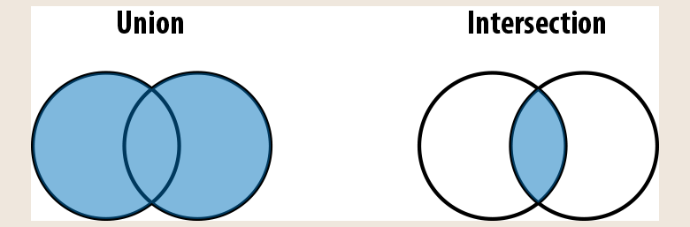

TypeScript
Учимся основам
Для навигации используйте пробел или стрелки клавиатуры.
Esc для обзора слайдов.
За авторством Воловика В.К. для АО «Открытие Брокер».
Исходный код доступен на GitHub.
Содержание:
Type Safety - Типобезопасность
Использование типизации для предотвращения ошибок на стадии анализа кода и компиляции.
Несколько примеров некорректных операций:
- Умножение числа на список
- Вызов функции с аргументом из списка строк, когда необходимо передавать список объектов
- Вызов несуществующего метода объекта
- Импорт модуля, который по какой-то причине недоступен по указанному пути
3 + [] // Evaluates to the string "3"
let obj = {}
obj.foo // Evaluates to undefined
function a(b) {
return b/2
}
a("z") // Evaluates to NaN
Обзор TypeScript
Компиляция
- Исходный код TS -> TS AST (абстрактное синтаксическое дерево)
- Проверка AST на типобезопаность
- TS AST -> JS
- JS -> JS AST
- JS AST -> байткод
- Обработка байткода в рантайме
Система типов
Два подхода - явно обозначать типы либо давать наследовать автоматически.
let a: number = 1 // a is a number
let b: string = 'hello' // b is a string
let c: boolean[] = [true, false] // c is an array of booleans
// vs
let aa = 1 // aa is a number
let bb = 'hello' // bb is a string
let cc = [true, false] // cc is an array of booleans
Отличия TypeScript от JavaScript
- Привязка типов? JS - динамическая в рантайме, TS - статическая во время компиляции, с учетомпостепенного перехода от JS к TS.
- Автоматическое преобразование типов? JS - да, TS - большей частью нет.
3 + [1]; // evaluates to "31"
(3).toString() + [1].toString() // evaluates to "31"
3 + [1]; // Error TS2365: Operator '+' cannot be applied to
// types '3' and 'number[]'.
(3).toString() + [1].toString() // evaluates to "31"
- В какой момент происходит проверка типов? JS - рантайм, TS - компиляция + статический анализ в редакторе.
- В какой момент всплывают ошибки? JS - большей частью рантайм, исключения - явные ошибки синтаксиса (следовательно, надо покрывать юнит тестами), TS - большей частью во время компиляции, исключения - ошибки, зависимые от внешних факторов: память, соеденение с сетью, некорректная обработка действий пользователя итп итд
Настройка и рабочее окружение
Поддержка в VSCode из коробки, требует дополнительной настройки для других редакторов и IDE. Компиляция происходит при помощи TSC. Большая часть настройки происходит в tsconfig.json. Настройка линтера TSLint - tslint.json.
Типы
Определение: набор значений и все, что можно с ними делать
- boolean - булевые значения (true и false) и операции (||, && и !)
- number - все числа, операции над ними (+, -, *, /, %, **, ||, &&, ?), методы (.toFixed, .toPreicision, .toString)
- string - все строки, операции над ними (+, ||, &&), методы (.concat, .toUpperCase)

Литерал типа (type literal)
Тип, который представляет одно значение и только его.
any
Все что угодно, стоит избегать, так как фактически приравнивает поведение к JS. Можно запретить флагом noImplicitAny или strict модом.
let a: any = 666 // any
let b: any = ['danger'] // any
let c = a + b // any
unknown
Тип заранее неизвестнeн, но можно сравнивать (==, ===, ||, &&, ?), отрицать (!), определять тип (typeof и instanceof).
let a: unknown = 30 // unknown
let b = a === 123 // boolean
let c = a + 10 // Error TS2571: Object is of type 'unknown'.
if (typeof a === 'number') {
let d = a + 10 // number
}
boolean
Булевые значения - true и false. Доступно сравнение (==, ===, ||, &&, ?), отрицать (!).
let a = true // boolean
var b = false // boolean
const c = true // true
let d: boolean = true // boolean
let e: true = true // true
let f: true = false // Error TS2322: Type 'false' is not assignable
// to type 'true'.
number
Все числа, включая целые числа, числа в плавающей точкой, позитивные и негативные, Infinity, NaN
let a = 1234 // number
var b = Infinity * 0.10 // number
const c = 5678 // 5678
let d = a < b // boolean
let e: number = 100_000 // number
let f: 26.218 = 26.218 // 26.218
let g: 26.218 = 10 // Error TS2322: Type '10' is not assignable
// to type '26.218'.
bigint
Упрощает работу с большими числами, соответствует BigInt в JS.
NB поддержка не на всех платформах.
let a = 1234n // bigint
const b = 5678n // 5678n
var c = a + b // bigint
let d = a < 1235 // boolean
let e = 88.5n // Error TS1353: A bigint literal must be an integer.
let f: bigint = 100n // bigint
let g: 100n = 100n // 100n
let h: bigint = 100 // Error TS2322: Type '100' is not assignable
// to type 'bigint'.
string
Строки, конкатенация и методы строк.
let a = 'hello' // string
var b = 'billy' // string
const c = '!' // '!'
let d = a + ' ' + b + c // string
let e: string = 'zoom' // string
let f: 'john' = 'john' // 'john'
let g: 'john' = 'zoe' // Error TS2322: Type "zoe" is not assignable
// to type "john".
symbol
Соответствуют ES2015
let a = Symbol('a') // symbol
let b: symbol = Symbol('b') // symbol
var c = a === b // boolean
let d = a + 'x' // Error TS2469: The '+' operator cannot be applied
// to type 'symbol'.
unique symbol
В случае объявления через const либо явным указанием.
const e = Symbol('e') // typeof e
const f: unique symbol = Symbol('f') // typeof f
let g: unique symbol = Symbol('f') // Error TS1332: A variable whose type is a
// 'unique symbol' type must be 'const'.
let h = e === e // boolean
let i = e === f // Error TS2367: This condition will always return
// 'false' since the types 'unique symbol' and
// 'unique symbol' have no overlap.
Типизация объектов
Отличия структурной и номитантивной типизации - статья на тему.
object
Значение - объект и не null.
let a: object = {
b: 'x'
}
a.b // Error TS2339: Property 'b' does not exist on type 'object'.
Литерал объекта
Автоматическая типизация на основе значения...
let a = {
b: 'x'
} // {b: string}
a.b // string
let b = {
c: {
d: 'f'
}
} // {c: {d: string}}
...либо явным указанием
let a: {b: number} = {
b: 12
} // {b: number}
Объявление через const отличается от примитивных типов, не является литералом типа
const a: {b: number} = {
b: 12
} // Still {b: number}
Пример с классом.
let c: {
firstName: string
lastName: string
} = {
firstName: 'john',
lastName: 'barrowman'
}
class Person {
constructor(
public firstName: string, // public is shorthand for
// this.firstName = firstName
public lastName: string
) {}
}
c = new Person('matt', 'smith') // OK
Примеры ошибок.
let a: {b: number}
a = {} // Error TS2741: Property 'b' is missing in type '{}'
// but required in type '{b: number}'.
a = {
b: 1,
c: 2 // Error TS2322: Type '{b: number; c: number}' is not assignable
} // to type '{b: number}'. Object literal may only specify known
// properties, and 'c' does not exist in type '{b: number}'.
Пример с объявлением переменной без присваивания значения
let a: number
let b = a * 3 // Error TS2454: Variable 'a' is used
// before being assigned.
let i
let j = i * 3 // Error TS2532: Object is possibly
// 'undefined'.
Опциональные свойства объекта
let a: {
b: number
c?: string
[key: number]: boolean
}
a = {b: 1}
a = {b: 1, c: undefined}
a = {b: 1, c: 'd'}
a = {b: 1, 10: true}
a = {b: 1, 10: true, 20: false}
a = {10: true} // Error TS2741: Property 'b' is missing in type
// '{10: true}'.
a = {b: 1, 33: 'red'} // Error TS2741: Type 'string' is not assignable
// to type 'boolean'.
Индексные сигнатуры
Для данного объекта все ключи типа T должны иметь значения типа U.
Ключи могут быть number или string
let airplaneSeatingAssignments: {
[seatNumber: string]: string
} = {
'34D': 'Boris Cherny',
'34E': 'Bill Gates'
}
airplaneSeatingAssignments['34B'] = 167
Свойства только для чтения
let user: {
readonly firstName: string
} = {
firstName: 'abby'
}
user.firstName // string
user.firstName =
'abbey with an e' // Error TS2540: Cannot assign to 'firstName' because it
// is a read-only property.
{a: string} vs {} vs object vs Object
- Литерал объекта (например, {a: string}) также называется формой. Приоритет на использование.
- object - можно использовать для проверки на объект, когда тип полей не имеет значения.
- Пустой литерал объекта ({}) - можно присвоить значение любого типа кроме null и undefined. Желательно избегать.
- Object - в отличие от пустого литерала объекта проверка на уровне прототипа Object. Желательно избегать.

Алиасы типов
Возможность объявить алиас для типа. Алиас всегда можно заменить на тип, на который он указывает.
type Age = number
type Person = {
name: string
age: Age
}
let age: Age = 55
let driver: Person = {
name: 'James May',
age: age
}
Алиасы нельзя переопределять, они имеют блочную область видимости.
type Color = 'red'
type Color = 'blue' // Error TS2300: Duplicate identifier 'Color'.
let x = Math.random() < .5
if (x) {
type Color = 'blue' // This shadows the Color declared above.
let b: Color = 'blue'
} else {
let c: Color = 'red'
}
Объеденение и пересечение типов
Описание отношения типов

type Cat = {name: string, purrs: boolean}
type Dog = {name: string, barks: boolean, wags: boolean}
type CatOrDogOrBoth = Cat | Dog
type CatAndDog = Cat & Dog
// Cat
let a: CatOrDogOrBoth = { name: 'Bonkers', purrs: true }
// Dog
a = { name: 'Domino', barks: true, wags: true }
// Both
a = { name: 'Donkers', barks: true, purrs: true, wags: true }
// Both
let b: CatAndDog = { name: 'Donkers', barks: true, purrs: true, wags: true }
Типизация массивов
Как и в JS поддерживают конкатенацию, добавление и удаление элементов, поиск итп итд
let a = [1, 2, 3] // number[]
var b = ['a', 'b'] // string[]
let c: string[] = ['a'] // string[]
let d = [1, 'a'] // (string | number)[]
const e = [2, 'b'] // (string | number)[]
let f = ['red']
f.push('blue')
f.push(true) // Error TS2345: Argument of type 'true' is not
// assignable to parameter of type 'string'.
let g = [] // any[]
g.push(1) // number[]
g.push('red') // (string | number)[]
let h: number[] = [] // number[]
h.push(1) // number[]
h.push('red') // Error TS2345: Argument of type '"red"' is not
// assignable to parameter of type 'number'.
Однородность
Рекомендуется придерживаться однородности для массивов, когда каждый элемент одного типа.
После того как массив покинул какую-либо область видимости, его тип финализируется.
function buildArray() {
let a = [] // any[]
a.push(1) // number[]
a.push('x') // (string | number)[]
return a
}
let myArray = buildArray() // (string | number)[]
myArray.push(true) // Error 2345: Argument of type 'true' is not
// assignable to parameter of type 'string | number'.
Кортежи (tuples)
Кортежи являются подтипом массивов, имеют фиксированную длину, каждый элемент за конкретным индексом имеет определенный тип. Типы должны быть обозначены в момент объявления.
let a: [number] = [1]
// A tuple of [first name, last name, birth year]
let b: [string, string, number] = ['malcolm', 'gladwell', 1963]
b = ['queen', 'elizabeth', 'ii', 1926] // Error TS2322: Type 'string' is not
// assignable to type 'number'.
Кортежи поддерживают опциональные элементы.
// An array of train fares, which sometimes vary depending on direction
let trainFares: [number, number?][] = [
[3.75],
[8.25, 7.70],
[10.50]
]
// Equivalently:
let moreTrainFares: ([number] | [number, number])[] = [
// ...
]
Кортежи поддерживают оставшиеся (rest) параметры.
// A list of strings with at least 1 element
let friends: [string, ...string[]] = ['Sara', 'Tali', 'Chloe', 'Claire']
// A heterogeneous list
let list: [number, boolean, ...string[]] = [1, false, 'a', 'b', 'c']
Массивы и кортежи только для чтения
Поддержка ограничения на мутации с помощью readonly.
let as: readonly number[] = [1, 2, 3] // readonly number[]
let bs: readonly number[] = as.concat(4) // readonly number[]
let three = bs[2] // number
as[4] = 5 // Error TS2542: Index signature in type
// 'readonly number[]' only permits reading.
as.push(6) // Error TS2339: Property 'push' does not
// exist on type 'readonly number[]'.
null, undefined, void и never
TS включает следующие специальные значения, имеющие соответствующие типы: null, undefined, void и never.
null - отсутствие значения.
undefined - значение для переменной, которой еще не было присвоено значение.
// (a) A function that returns a number or null
function a(x: number) {
if (x < 10) {
return x
}
return null
}
// (b) A function that returns undefined
function b() {
return undefined
}
void - тип для функций, которые ничего не возвращают.
never - тип для функций, которые никогда ничего не возвращают (выкидывают эксепшен или работают бесконечно).
// (c) A function that returns void
function c() {
let a = 2 + 2
let b = a * a
}
// (d) A function that returns never
function d() {
throw TypeError('I always error')
}
// (e) Another function that returns never
function e() {
while (true) {
console.log("forever and ever")
}
}
Перечисления (enums)
Перечисление - тип данных, чьё множество значений представляет собой ограниченный список идентификаторов.
Сущесвует два варианта перечислений: строки к строкам, строки к числам.
enum Language {
English,
Spanish,
Russian
}
enum Car {
Ferrari = 0,
Porsche = 1,
McLaren = 2
}
let myFirstLanguage = Language.Russian // Language
let myFavoriteCar = Car['McLaren'] // Car
let unsafeLanguage = Language.German // Property 'German'
// does not exist on type 'typeof Language'.
Пример с цветами.
enum Color {
Red = '#c10000',
Blue = '#007ac1',
Pink = 0xc10050, // A hexadecimal literal
White = 255 // A decimal literal
}
let red = Color.Red // Color
let pink = Color.Pink // Color
let b = Color.Green // Error TS2339: Property 'Green' does not exist
// on type 'typeof Color'.
let c = Color[0] // string
let d = Color[6] // string (!!!)
Более безопасно использовать const enum.
const enum Language {
English,
Spanish,
Russian
}
// Accessing a valid enum key
let a = Language.English // Language
// Accessing an invalid enum key
let b = Language.Tagalog // Error TS2339: Property 'Tagalog' does not exist
// on type 'typeof Language'.
// Accessing a valid enum value
let c = Language[0] // Error TS2476: A const enum member can only be
// accessed using a string literal.
// Accessing an invalid enum value
let d = Language[6] // Error TS2476: A const enum member can only be
// accessed using a string literal.
Функции
function add(a: number, b: number): number {
return a + b
}
Способы объявления функций
// Named function
function greet(name: string) {
return 'hello ' + name
}
// Function expression
let greet2 = function(name: string) {
return 'hello ' + name
}
// Arrow function expression
let greet3 = (name: string) => {
return 'hello ' + name
}
// Shorthand arrow function expression
let greet4 = (name: string) => 'hello ' + name
// Function constructor
let greet5 = new Function('name', 'return "hello " + name')
Опциальные параметры
function log(message: string, userId?: string) {
let time = new Date().toLocaleTimeString()
console.log(time, message, userId || 'Not signed in')
}
log('Page loaded') // Logs "12:38:31 PM Page loaded Not signed in"
log('User signed in', 'da763be') // Logs "12:38:31 PM User signed in da763be"
Параметры по умолчанию
function log(message: string, userId = 'Not signed in') {
let time = new Date().toISOString()
console.log(time, message, userId)
}
log('User clicked on a button', 'da763be')
log('User signed out')
Оставшиеся (rest) параметры
function sumVariadicSafe(...numbers: number[]): number {
return numbers.reduce((total, n) => total + n, 0)
}
sumVariadicSafe(1, 2, 3) // evaluates to 6
Типизация this
Использование this не рекомендуется. Флаг - noImplicitThis.
function fancyDate(this: Date) {
return `${this.getDate()}/${this.getMonth()}/${this.getFullYear()}`
}
fancyDate.call(new Date) // evaluates to "6/13/2008"
fancyDate() // Error TS2684: The 'this' context of type 'void' is
// not assignable to method's 'this' of type 'Date'.
Сигнатура фунции
Возможность описать тип отдельно от функции.
type Log = (message: string, userId?: string) => void
let log: Log = (
message,
userId = 'Not signed in'
) => {
let time = new Date().toISOString()
console.log(time, message, userId)
}